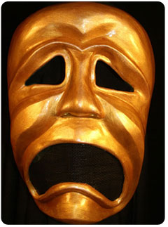
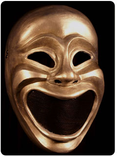
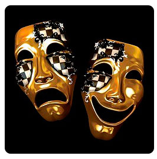
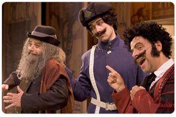
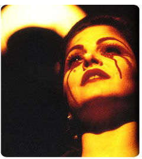
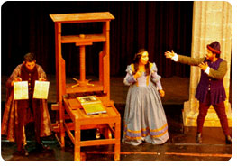
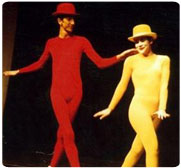

Tragedia
Es una obra dramática extensa, en la que el diálogo, la acción y los caracteres están revestidos de solemnidad y cuyo desenlace es funesto.
Comedia
Género realista donde generalmente los autores a través de la risa intentan que el espectador reflexione acerca de lo que sucede. Algunos autores la consideran moralista.
Tragicomedia
Género no realista que no se trata de la unión o mezcla de la tragedia y la comedia. Tiene como objetivo el mostrar cómo funciona un defecto o una virtud cuando es enfrentada a circunstancias superiores a lo normal.
Farsa
Entre los griegos y latinos ya existían las farsas pero es durante la Edad Media que se constituye como género y se le llamaban así a unas composiciones teatrales dedicadas a entretener o a moralizar con un tono burlesco. La farsa llega a su máxima expresión en el siglo XX con Ionesco y Beckett.
Melodrama
Es género que produce emociones contrapuestas, como entusiasmo y depresión, alegría o tristeza, procura divertir y entretener al espectador.
Pieza
Algunos autores le han llamado la tragedia moderna, pero se diferencia de ella porque la pieza tiene poca acción, su anécdota mostrará un conflicto cotidiano mínimo, en el que el personaje extrae conclusiones importantes los cuales transformarán su vida, siendo el mismo personaje el centro de la acción.
Sacramental
Contiene los órdenes temáticos, anecdóticos, estéticos y estructurales, que son sometidos al servicio del autor dramático. El cual sostiene una postura doctrinal o tesis orientada a dirigir o afirmar a la sociedad en una determinante corriente ideológica.